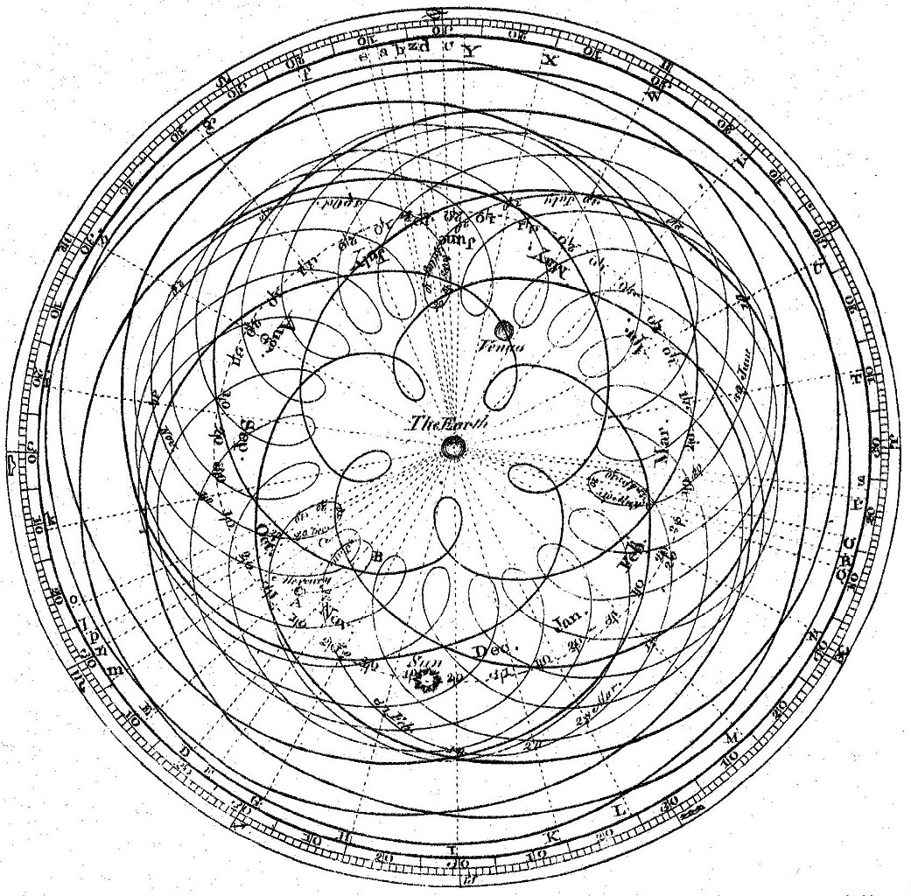

Prediction and Explanation
Why did the geocentric model, which places the Earth in the center of the solor system, last for so long? Part of the answer is that it was a good model. The Ptolemaic system relied upon epicycles to explain the retrograde motion of the planets. The model was able to predict the positions of the planets with great accuracy. It was only when Copernicus proposed a heliocentric model that the geocentric model was replaced. The heliocentric model was not only simpler, but it also provided a better explanation for the retrograde motion of the planets.

A model can make good predictions while completely missing the underlying mechanisms.
In this class, we will focus on three different epistemological outcomes: prediction, explanation, and causality.
What is Science?
Lazer et al. (2020) defines computational social science as “the development and application of computational methods to complex, typically large-scale, human (sometimes simulated) behavioral data”. I like this definition, but I think it’s incomplete: it doesn’t quite explain the science part of computational social science. Yes, it’s computational; yes, it is applied to social data; but what does it mean to do science in this context? It is helpful to first think about science as a practice before defining a specific approach.
After asking a lot of people’s input, The Science Council (n.d.) defined science as “the pursuit of knowledge and understanding of the natural and social world following a systematic methodology based on evidence”. This definition describes science as empirical, which privileges knowledge created downstream from observation. It is sufficiently vague enough to encompass the many different approaches scientists use in practice while rejecting forms of pseudoscience. What empiricism allows us to do effectively is rule out theories and models of the world when they are falsifiable. There are limits, however, to what we can know via empiricism. As such, the scientific practitioner should carry a significant amount of humility, espessially when working with something as tricky as data generated from social processes. 1
Predictions
Models tend to be most useful when they can successfully predict future events to which they had no previous knowledge. Various approaches to prediction have been developed within the field of machine learning; however, computational social science’s aims are not the same as machine learning. Wallach (2018), a scientist trained in machine learning who has moved over to practicing computational social science, helpfully illustrates some of the differences. She builds on an example from Hopkins and King (2010, 230), who say:
Policy makers or computer scientists may be interested in finding the needle in the haystack (such as a potential terrorist threat or the right web page to display from a search), but social scientists are more commonly interested in characterizing the haystack.
Explainations are not always better than predictions—sometimes better models make worse predictions—but for the purpose of performing computational social science, we tend to be more interested in models that can help exlpain some underlying social process. And to do this, we tend to need the kind of models that lend themselves toward explaination (Wallach 2018, 43).
Explanations
King, Pan, and Roberts (2013) present an exemplory paper that does exactly this. Their “haystack” of interest is censorship in China. To understand how this censorship works in practice, they collect data from the internet and infer when censorship has been applied. Doing this at scale allows them to analyze what kind of posts get taken down. Their findings challenge some prior beliefs about this process: negative posts critical of the government were not more likely to be censored, but comments which might lead to more collective action were.
Here, we can consider a few part of this paper that are worth thinking about when reading computational social science papers:
- What is the process (the haystack) of interest?
- How do the researchers map the data to this process?
- What does this tell us that we would not already know or could not find out or verify in another way?
Causality
Often, researchers want to explain how one process influences another. In such cases, it helps to think about causality.
The human brain is a very strong causal engine: we see causal events everywhere, even in places where no causal relationship exists. When we see someone slip on a wet floor, we might infer that the slipperyness of the floor caused the fall and exercise caution ourselves. But at the same time, we also tend to see causality where it does not exist (e.g. conspiracy theories).
This can espessially become a problem because computational social scientists often rely on observational studies, where the causality can be tricky. Sometimes relationships which appear in observational studies are misleading. For instance, observational studies suggested that hormone replacement therapy (HRT) with estrogen plus progestin reduced the risk of heart disease in post-menopausal women; however, a large randomized controlled trial later shows that HRT actually increased the risk of heart disease for post-menopausal women (Rossouw et al. 2002). The women in the observational studies were not representative of the population of women: they were wealthier and had better access to healthcare (Dubey et al. 2004). As such, the obvservational studies missed a key confounder which flipped the results from what the RCT later showed.
We will discuss causal inference more in a later section.